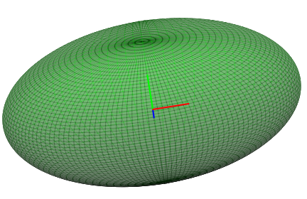

| Choisissez votre langue ! | Choose your language ! |
On se donne dans le plan y=0, l'ellipse de grand axe 4 (direction // à x'Ox) et de petit axe 2 (direction // z'Oz).
Cette ellipse a pour equation :
\( \displaystyle \left( \sqrt{x^{2} + y^{2}} \pm 2 \right)^{2} + z^{2} = 1^{2} \)
On fait d'abord tourner cette ellipse autour de l'axe z'Oz.On la fait ensuite tourner autour de l'axe x'Ox.
Donner dans chaque cas une représentation paramétrique de la surface de révolution engendrée (ellipsoïde).
Donner également pour chaque cas une équation cartésienne.
Utiliser un programme existant ou écrire un programme spécifique pour représenter ces surfaces en 3D.
aide
Un paramétrage de l'ellipse est :
x=2cos(t)
z=sin(t)
La matrice de la rotation d'axe Oz et d'angle θ est :
\( \displaystyle \begin{pmatrix} {\cos(\theta)} & {- \sin(\theta)} & 0 \\ {\sin(\theta)} & {\cos(\theta)} & 0 \\ 0 & 0 & 1 \\ \end{pmatrix} \)
La matrice de la rotation d'axe Ox et d'angle θ est :\( \displaystyle \begin{pmatrix} 1 & 0 & 0 \\ 0 & {\cos(\theta)} & {- \sin(\theta)} \\ 0 & {\sin(\theta)} & {\cos(\theta)} \\ \end{pmatrix} \)
solution
On obtient donc dans le premier cas la représentation paramétrique :
x(t,θ)=2cos(t)cos(θ)
y(t,θ)=2cos(t)sin(θ)
z(t,θ)=sin(t)
De là nous tirons :
x2+y2+4z2=4
On obtient dans le second cas, la représentation paramétrique :
x(t,θ)=2cos(t)
y(t,θ)=sin(t)sin(θ)
z(t,θ)=sin(t)cos(θ)
De là nous tirons :
x2+4y2+4z2=4
Voici l'image produite :
We are given in the plane y=0, the ellipse with major axis 4 (direction // at x'Ox) and minor axis 2 (direction // z'Oz).
This ellipse has the equation:
\( \displaystyle \left( \sqrt{x^{2} + y^{2}} \pm 2 \right)^{2} + z^{2} = 1^{2} \)
We first rotate this ellipse around the z'Oz axis.It is then rotated around the x'Ox axis.
Give in each case a parametric representation of the generated surface of revolution (ellipsoid).
Also give for each case a Cartesian equation.
Use an existing program or write a specific program to represent these surfaces in 3D.
hint
A parametrization of the ellipse is:
x=2cos(t)
z=sin(t)
The rotation matrix with axis Oz and angle θ is:
\( \displaystyle \begin{pmatrix} {\cos(\theta)} & {- \sin(\theta)} & 0 \\ {\sin(\theta)} & {\cos(\theta)} & 0 \\ 0 & 0 & 1 \\ \end{pmatrix} \)
The rotation matrix with axis Ox and angle θ is:\( \displaystyle \begin{pmatrix} 1 & 0 & 0 \\ 0 & {\cos(\theta)} & {- \sin(\theta)} \\ 0 & {\sin(\theta)} & {\cos(\theta)} \\ \end{pmatrix} \)
solution
We therefore obtain in the first case the parametric representation:
x(t,θ)=2cos(t)cos(θ)
y(t,θ)=2cos(t)sin(θ)
z(t,θ)=sin(t)
From here we draw:
x2+y2+4z2=4
In the second case, we obtain the parametric representation:
x(t,θ)=2cos(t)
y(t,θ)=sin(t)sin(θ)
z(t,θ)=sin(t)cos(θ)
From here we draw:
x2+4y2+4z2=4
Here's the image :
|
Création Gilles Dubois
Created by Gilles Dubois
|
Janvier 2022
January 2022
|
Version mobile Jquery
Mobile Jquery version
|
|